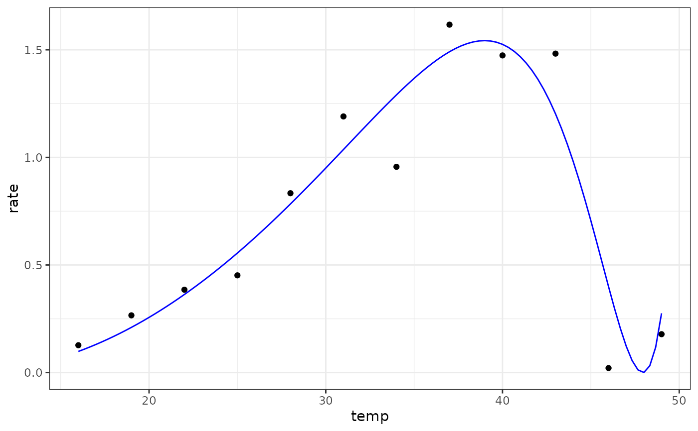

Ratkowsky model for fitting thermal performance curves
ratkowsky_1983(temp, tmin, tmax, a, b)temperature in degrees centigrade
low temperature (ºC) at which rates become negative
high temperature (ºC) at which rates become negative
parameter defined as sqrt(rate)/(temp - tmin)
empirical parameter needed to fit the data for temperatures beyond the optimum temperature
a numeric vector of rate values based on the temperatures and parameter values provided to the function
Equation: $$rate = (a \cdot (temp-t_{min}))^2 \cdot (1-exp(b \cdot (temp-t_{max})))^2$$
Start values in get_start_vals are derived from the data and previous values in the literature.
Limits in get_lower_lims and get_upper_lims are based on extreme values that are unlikely to occur in ecological settings.
Generally we found this model easy to fit.
Ratkowsky, D.A., Lowry, R.K., McMeekin, T.A., Stokes, A.N., Chandler, R.E., Model for bacterial growth rate throughout the entire biokinetic temperature range. J. Bacteriol. 154: 1222–1226 (1983)
# load in ggplot
library(ggplot2)
# subset for the first TPC curve
data('chlorella_tpc')
d <- subset(chlorella_tpc, curve_id == 1)
# get start values and fit model
start_vals <- get_start_vals(d$temp, d$rate, model_name = 'ratkowsky_1983')
# fit model
mod <- nls.multstart::nls_multstart(rate~ratkowsky_1983(temp = temp, tmin, tmax, a, b),
data = d,
iter = c(4,4,4,4),
start_lower = start_vals - 10,
start_upper = start_vals + 10,
lower = get_lower_lims(d$temp, d$rate, model_name = 'ratkowsky_1983'),
upper = get_upper_lims(d$temp, d$rate, model_name = 'ratkowsky_1983'),
supp_errors = 'Y',
convergence_count = FALSE)
# look at model fit
summary(mod)
#>
#> Formula: rate ~ ratkowsky_1983(temp = temp, tmin, tmax, a, b)
#>
#> Parameters:
#> Estimate Std. Error t value Pr(>|t|)
#> tmin 9.51995 4.60886 2.066 0.07273 .
#> tmax 47.93852 0.32095 149.366 4.51e-15 ***
#> a 0.04841 0.01163 4.162 0.00316 **
#> b 0.22857 0.06129 3.729 0.00579 **
#> ---
#> Signif. codes: 0 ‘***’ 0.001 ‘**’ 0.01 ‘*’ 0.05 ‘.’ 0.1 ‘ ’ 1
#>
#> Residual standard error: 0.2244 on 8 degrees of freedom
#>
#> Number of iterations to convergence: 42
#> Achieved convergence tolerance: 1.49e-08
#>
# get predictions
preds <- data.frame(temp = seq(min(d$temp), max(d$temp), length.out = 100))
preds <- broom::augment(mod, newdata = preds)
# plot
ggplot(preds) +
geom_point(aes(temp, rate), d) +
geom_line(aes(temp, .fitted), col = 'blue') +
theme_bw()
